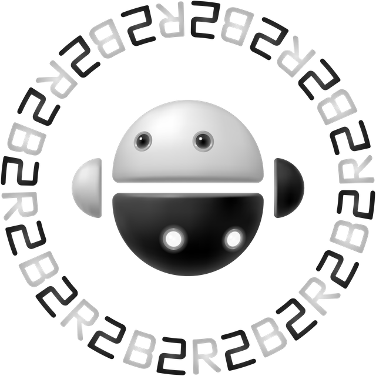

B2R2 is a collection of open-source libraries and tools for binary analysis, written entirely in F#.
Download it now!
Binary Analysis Made Easy and Fun!
Key features of B2R2
Functional First
Written entirely in F#, B2R2 offers language features that make program analysis easier, including pattern matching and algebraic data types.
Fast
Thanks to F# and its functional-first design, B2R2 naturally supports parallelism, making it easier to build highly optimized binary analysis tools.
Fully Managed
Because it is fully managed, B2R2 avoids dependency hell. All you need is the .NET SDK to get started.
OS Independent
B2R2 runs on any operating system supported by .NET, including Linux, macOS, and Windows.
Language Agnostic
Although B2R2 is written in F#, it interoperates well with other languages, including C# and VB.NET.
Open Source
B2R2 is released under the MIT License, so you can use it in commercial projects as well.
Download B2R2
B2R2 is available from both NuGet and GitHub.

The source code is freely available on GitHub.
Building B2R2 is as simple as running dotnet build in
your terminal. No dependency hell. It just works.
We welcome contributions.
Please read the contribution guidelines carefully before opening a pull request.
Fork B2R2 on GitHub Browse the API Reference
FAQ
Q. What does B2R2 mean?
B2R2 is a binary analysis framework, so its name comes from "binary" and "reversing." In fact, both "B" and "2" stand for binary, and "R" stands for reversing. Originally, the framework was named B2-R2, inspired by R2-D2 from Star Wars. We later removed the dash (-) because .NET does not allow it in identifiers or namespaces.
Q. Does the logo have any special meaning?
Yes. It is inspired by Bagua. The two robots facing each other at the center of the logo resemble the Tai Chi symbol. In Taoism, every object in the universe is considered to have its own energy, or force. This energy can be either negative or positive, which are known as Yin and Yang, respectively. The idea is strikingly similar to "binary", because two seemingly opposite values, 0 and 1, can represent any computation a computer can perform. The repeated B2R2 letters in the logo also reflect Yin and Yang, or binary duality, through their alternating colors.